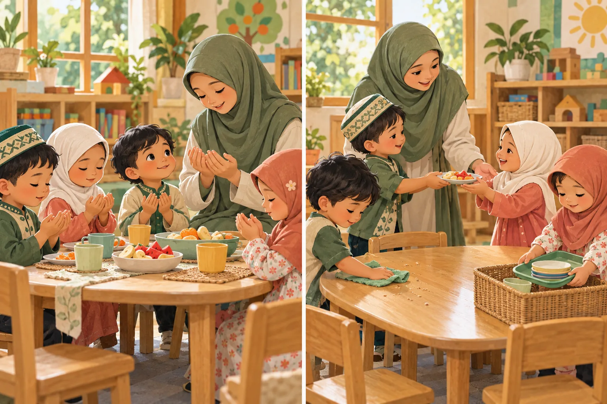
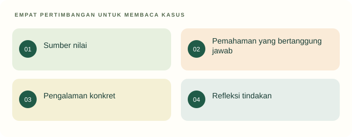

Tujuan pembelajaran
- Membedakan sumber normatif, penafsiran, dan keputusan pedagogis.
- Menghubungkan nilai Islam dengan hubungan dan pengalaman pendidikan.
- Mengkritisi penyempitan pendidikan agama menjadi hafalan dan kepatuhan.
Bagaimana pendidikan agama tampak dalam cara guru memperlakukan anak?

Seorang anak belum lancar mengucapkan doa. Guru membandingkannya dengan teman yang sudah hafal. Anak kemudian menolak mengikuti kegiatan. Guru lain mengajak kelompok kecil berdoa sambil menjelaskan makna syukur melalui pengalaman makan bersama.
- Bentuk partisipasi apa yang tampak selain melafalkan doa?
- Bagaimana nilai syukur dapat hadir dalam tindakan sehari-hari?
Temukan persoalan konseptual
Sebelum membaca penjelasan, pisahkan kejadian yang dinyatakan dalam kasus dari dugaan Anda. Gunakan pertanyaan berikut untuk menyiapkan analisis.
- Apa tujuan pendidikan yang sedang dipertaruhkan?
- Pengalaman apa yang dialami anak, dan informasi apa yang belum tersedia?
- Konsep atau jenis sumber apa yang diperlukan untuk menilai tindakan pendidik?
Adab sehari-hari

Visual menghubungkan arah nilai, keteladanan, pengalaman, dan refleksi. Kemampuan melafalkan doa tidak digunakan sebagai ukuran tunggal akhlak atau keimanan anak.
Nilai hadir melalui relasi dan pengalaman; hafalan bukan satu-satunya indikator pendidikan akhlak.
Nilai sebagai arah pendidikan
Dalam PIAUD, dimensi Islam memberi orientasi mengenai hubungan dengan Allah, sesama manusia, dan lingkungan. Pendidikan nilai perlu terlihat pada tujuan dan cara memperlakukan anak. Materi ini menempatkan kasih sayang, keteladanan, adab, serta tanggung jawab sebagai tema untuk analisis pedagogis; ia tidak menggantikan kajian tafsir, hadis, atau fikih.
Bedakan tiga lapis: sumber normatif, pemahaman atas sumber, dan bentuk kegiatan. Satu nilai dapat diwujudkan melalui beberapa kegiatan. Karena itu, keputusan metode perlu mempertimbangkan karakteristik anak dan konteks, tidak cukup dibenarkan oleh tujuan religius yang dinyatakan guru.
Membaca sumber secara bertanggung jawab
Surah Luqman ayat 13–19 menjadi bahan pembacaan nilai tentang keyakinan, tanggung jawab, dan perilaku dalam hubungan sosial. Mahasiswa diminta membaca sumber beserta penjelasan yang kredibel, bukan mengambil kalimat terpisah untuk membenarkan tindakan yang telah dipilih. Unit ini tidak mengutip terjemahan panjang atau menyatakan satu tafsir sebagai satu-satunya penjelasan.
Istilah tarbiyah, ta’lim, dan ta’dib dapat dikenalkan sebagai istilah yang dibahas dalam tradisi pendidikan Islam. Jangan memaksakan padanan tunggal dan hierarki universal tanpa sumber yang jelas. Untuk tahap pengantar, lebih penting menjelaskan nilai yang dimaksud serta konsekuensi tindakannya daripada memperbanyak istilah.
Keteladanan dan pengalaman konkret
Anak mengalami nilai melalui tindakan orang dewasa: mendengarkan, menepati janji, meminta maaf, merawat benda, dan membantu. Usulan pembelajaran adalah menghubungkan ungkapan religius dengan pengalaman keseharian. Syukur dapat dibicarakan saat makan; tanggung jawab saat merapikan; kepedulian saat teman membutuhkan bantuan.
Kegiatan hafalan dapat menjadi bagian pengalaman, tetapi ketepatan lafaz tidak mewakili seluruh perkembangan nilai. Guru perlu melihat pemahaman sederhana dan keterlibatan anak tanpa menilai kedalaman iman dari performa kelas. Hindari membandingkan anak secara mempermalukan. Nilai yang ingin dikembangkan harus konsisten dengan cara pendidik bertindak.
Pembiasaan, pilihan, dan perlindungan
Pembiasaan membantu membangun rutinitas, namun perlu disertai penjelasan yang dapat dijangkau anak dan respons yang hangat. Kepatuhan karena takut tidak otomatis sama dengan penghayatan. Sebagai rancangan praktis, beri kesempatan mencoba, bantuan pengucapan, serta ruang bertanya. Perbedaan kemampuan tidak dijadikan ukuran kelayakan anak dihargai.
Dalam RA, implementasi kurikulum juga mengacu pada pedoman Kemenag. Kebijakan lembaga, sumber normatif, dan perlindungan anak harus dibaca bersama sesuai fungsinya (KMA 1503/2025; UU 35/2014). Materi ini tidak menetapkan sanksi atau keputusan fikih; fokusnya kualitas pertimbangan calon pendidik.
Kembali ke kasus
Perbandingan yang mempermalukan tidak selaras dengan pengalaman pendidikan yang menghargai anak. Guru dapat mempertahankan tujuan mengenalkan doa sambil mengubah dukungan. Kelancaran hafalan dan kualitas pengalaman religius perlu dibedakan.
Analisis ini merupakan contoh penalaran pedagogis. Pada situasi nyata, keputusan memerlukan informasi tentang anak dan konteks lembaga.
Satu kasus, dua cara merespons
Gunakan teori pada materi di atas untuk memeriksa alasan dan akibat yang mungkin muncul. Alternatif ini merupakan contoh telaah, bukan resep untuk semua anak.
Menilai melalui hafalan saja
Menegur anak di depan teman karena belum lancar melafalkan doa.
Lafal diperlakukan seolah cukup mewakili pemahaman dan akhlak.
Meneladankan nilai dengan ramah
Mengajak berdoa, menjelaskan makna sederhana, berbagi, dan merawat kebersihan.
Amati partisipasi dan kebutuhan bantuan tanpa memberi label keimanan.
Dari melihat ke beralasan
Hubungkan satu tindakan pada gambar dengan nilai Islam dan satu dukungan konkret pendidik.
Buka contoh penalaran setelah mencoba
Contoh: berbagi buah dikaitkan dengan kepedulian. Pendidik mencontohkan menawarkan kepada teman dan memberi kesempatan anak melakukannya secara bertahap, tanpa mempermalukan.
Dasar konsep dan sitasi: baca materi inti serta referensi unit ini. Adegan dan alternatif merupakan penerapan ilustratif penyusun.
Latihan terbimbing
Pilih nilai amanah. Lengkapi rantai nilai, pengalaman, tindakan guru, dan bukti yang dapat diamati. Contoh pengalaman: mengembalikan buku pinjaman. Jangan menyimpulkan iman anak dari satu perilaku.
Latihan mandiri
Rancang kegiatan mengenalkan syukur untuk anak 4–6 tahun. Jelaskan sumber normatif, pengalaman konkret, percakapan guru, dan dukungan bagi anak yang belum mau berbicara. Tandai mana interpretasi pedagogis Anda.
- Konsep digunakan dengan tepat dan dijelaskan hubungannya dengan kasus.
- Fakta dipisahkan dari interpretasi; sumber mendukung jenis klaimnya.
- Tindakan konkret, menghargai anak, dan memiliki cara peninjauan.
Lihat pembahasan
Hafalan menjadi salah satu kegiatan, sementara pengalaman nilai perlu dilihat lebih luas.
Performa hafalan tidak cukup untuk menyimpulkan keadaan iman. Cara mendidik tetap harus dapat dipertanggungjawabkan.
Refleksi calon pendidik
Apakah cara saya mengajarkan nilai sudah menunjukkan nilai yang sama?
Catatan hanya disimpan di peramban ini. Tidak dikirim kepada dosen.
Intisari dan tindak lanjut
- Sumber normatif, penafsiran, dan rancangan kegiatan perlu dibedakan.
- Nilai Islam diwujudkan pula melalui hubungan dan keteladanan pendidik.
- Hafalan tidak cukup menjadi ukuran keseluruhan pengalaman religius anak.
Uji kembali pemahaman di atas melalui latihan mandiri. Jika alasan Anda belum menghubungkan konsep dan tindakan, baca ulang submateri terkait sebelum menandai selesai.
Referensi dan bacaan pendamping
Sumber untuk klaim khusus disebut pada uraian. Buku pendamping tidak dikutip langsung. Jenis dan batas penggunaan setiap rujukan dijelaskan di bawah.
- Al-Qur’an. Surah Luqman (31), ayat 13–19.Rujukan ayat untuk pembacaan nilai pendidikan. Portal tidak mengutip terjemahan panjang atau mengklaim tafsir tunggal. Gunakan tafsir yang kredibel untuk pendalaman.
- Kementerian Agama. (2025). Keputusan Menteri Agama Nomor 1503 Tahun 2025 tentang Perubahan atas Keputusan Menteri Agama Nomor 450 Tahun 2024 tentang Pedoman Implementasi Kurikulum pada Raudhatul Athfal, Madrasah Ibtidaiyah, Madrasah Tsanawiyah, Madrasah Aliyah, dan Madrasah Aliyah Kejuruan.Rujukan khusus RA dan madrasah. Judul portal JDIH memuat pengulangan kata; bibliografi menormalkan pengulangan itu.
- Republik Indonesia. (2014). Undang-Undang Nomor 35 Tahun 2014 tentang Perubahan atas Undang-Undang Nomor 23 Tahun 2002 tentang Perlindungan Anak.Dibaca bersama UU dasar dan perubahan berikutnya, termasuk UU 17/2016. Materi ini berfokus pada hak anak, bukan penetapan sanksi pidana.
- Suyadi, & Ulfah, M. (2013). Konsep dasar PAUD. Remaja Rosdakarya.Bacaan pendamping untuk peta PAUD Indonesia. Tahun mengikuti terbitan 2013; cocokkan dengan cetakan yang digunakan.